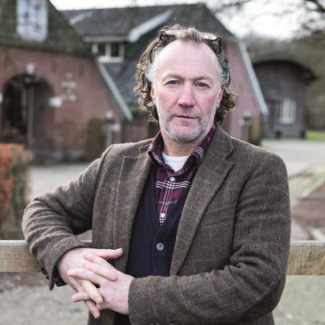

Badger Face Welsh Mountain sheep
The Badger Face Welsh Mountain (Welsh Defaid Idloes [ˈdevaɪd ˈɪdlɔɪs]; also known as Badger Faced Welsh Mountain or Welsh Badger-faced) is a distinct variety of the Welsh Mountain breed of domestic sheep bred for sheep farming in Wales.[1] It is a hardy upland breed known for producing a high percentage of twins and triplets under good conditions. It appears in two sub-varieties of its own: the Torddu ([tɔrˈðiː], "black-bellied"), which has a white fleece with dark face and belly, and the Torwen ([tɔrˈwɛn], "white-bellied"), which has a black body with a white belly and white stripes over the eyes. [2] The Torddu is the more common of the two types. In both types, ewes are polled and rams are horned.[3] Although this breed grows wool, it is primarily raised for meat.[4]
In 2021 the breed was added to the Rare Breeds Survival Trust watchlist due to a 30 percent decline in sheep numbers since 2013. The RBST partnered with the Badger Face Welsh Mountain Sheep Society, with both groups hoping to encourage further breeding of the sheep to prevent numbers declining further.[5]
Characteristics
This breed is extremely hardy and able to graze rough hills and terrain. On average at maturity, rams weigh 55 kg (121 lb) and ewes 45 kg (99 lb).
